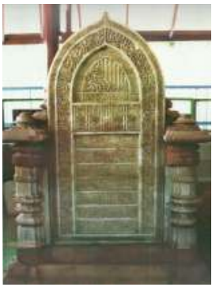

Kedatangan Islam ke Nusantara
Memahami Teks
Terdapat berbagai pendapat mengenai proses masuknya Islam ke Kepulauan Indonesia, terutama perihal waktu dan tempat asalnya.
Pertama
Pertama, sarjana-sarjana Barat—kebanyakan dari Negeri Belanda—mengatakan bahwa Islam yang masuk ke Kepulauan Indonesia berasal dari Gujarat sekitar abad ke-13 M atau abad ke-7 H. Pendapat ini mengasumsikan bahwa Gujarat terletak di India bagian barat, berdekatan dengan Laut Arab. Letaknya sangat strategis, berada di jalur perdagangan antara timur dan barat. Pedagang Arab yang bermahzab Syafi’i telah bermukim di Gujarat dan Malabar sejak awal tahun Hijriyah (abad ke-7 M). Orang yang menyebarkan Islam ke Indonesia menurut Pijnapel bukanlah dari orang Arab langsung, melainkan para pedagang Gujarat yang telah memeluk Islam dan berdagang ke dunia Timur. Pendapat J. Pijnapel kemudian didukung oleh C. Snouck Hurgronye, dan J.P. Moquetta (1912). Argumentasinya didasarkan pada batu nisan Sultan Malik Al-Saleh yang wafat pada 17 Dzulhijjah 831 H atau 1297 M di Pasai, Aceh. Menurutnya, batu nisan di Pasai dan makam Maulana Malik Ibrahim yang wafat tahun 1419 di Gresik, Jawa Timur, memiliki bentuk yang sama dengan batu nisan yang terdapat di Kambay, Gujarat. Moquetta kemudian berkesimpulan bahwa batu nisan tersebut diimpor dari Gujarat, atau setidaknya dibuat oleh orang Gujarat atau orang Indonesia yang telah belajar kaligrafi khas Gujarat.
Kedua
Kedua, Hoesein Djajadiningrat mengatakan bahwa Islam yang masuk ke Indonesia berasal dari Persia (Iran sekarang). Pendapatnya didasarkan pada kesamaan budaya dan tradisi yang berkembang antara masyarakat Parsi dan Indonesia. Tradisi tersebut antara lain: tradisi merayakan 10 Muharram atau Asyuro sebagai hari suci kaum Syiah atas kematian Husein bin Ali, seperti yang berkembang dalam tradisi tabot di Pariaman di Sumatra Barat dan Bengkulu.

Ketiga
Ketiga, Buya Hamka (Haji Abdul Malik Karim Amrullah) mengatakan bahwa Islam berasal dari tanah kelahirannya, yaitu Arab atau Mesir. Proses ini berlangsung pada abad pertama Hijriah atau abad ke-7 M. Senada dengan pendapat Hamka, teori yang mengatakan bahwa Islam berasal dari Mekkah dikemukakan Anthony H. Johns. Menurutnya, proses Islamisasi dilakukan oleh para musafir (kaum pengembara) yang datang ke Kepulauan Indonesia. Kaum ini biasanya mengembara dari satu tempat ke tempat lainnya dengan motivasi hanya pengembangan agama Islam.

Semua teori di atas bukan mengada-ada, tetapi mungkin bisa saling melengkapi. Islamisasi di Kepulauan Indonesia merupakan hal yang kompleks dan hingga kini prosesnya masih terus berjalan. Pasai dan Malaka, adalah tempat di mana tongkat estafet Islamisasi dimulai. Pengaruh Pasai kemudian diwarisi Aceh Darussalam. Sedangkan Johor tidak pernah bisa melupakan jasa dinasti Palembang yang pernah berjaya dan mengislamkan Malaka. Demikian pula Sulu dan Mangindanao akan selalu mengingat Johor sebagai pengirim Islam ke wilayahnya. Sementara itu Minangkabau akan selalu mengingat Malaka sebagai pengirim Islam dan tak pernah melupakan Aceh sebagai peletak dasar tradisi surau di Ulakan. Sebaliknya Pahang akan selalu mengingat pendatang dari Minangkabau yang telah membawa Islam. Peranan para perantau dan penyiar agama Islam dari Minangkabau juga selalu diingat dalam tradisi Luwu dan Gowa-Tallo.